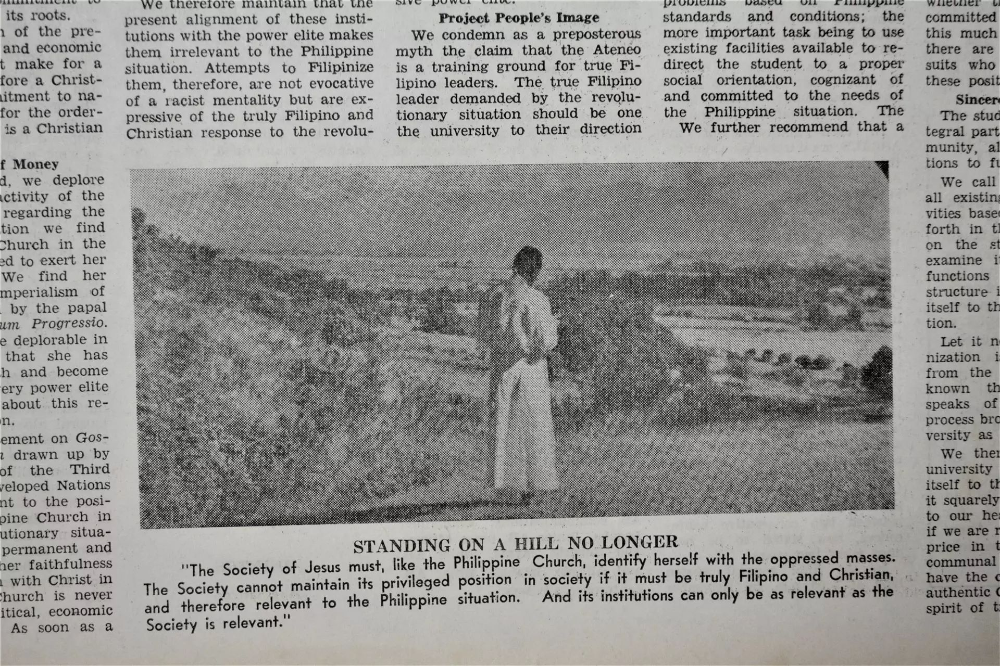
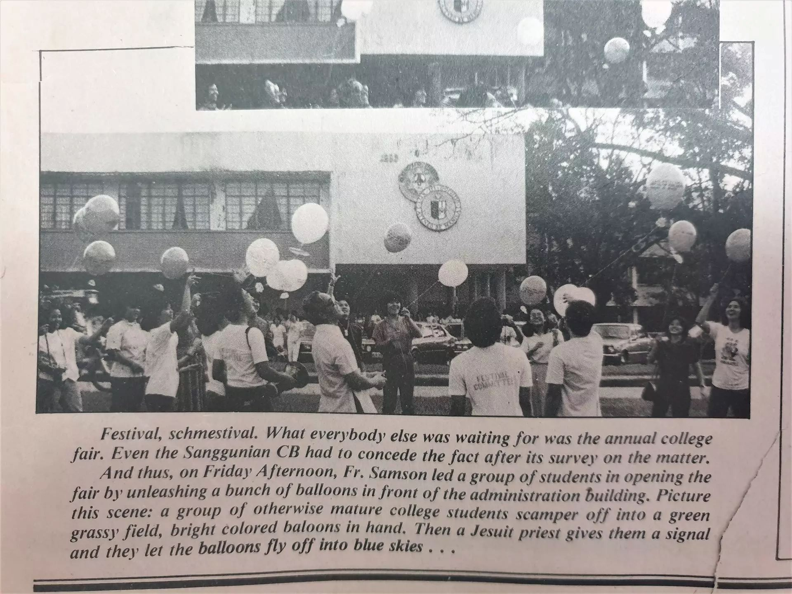
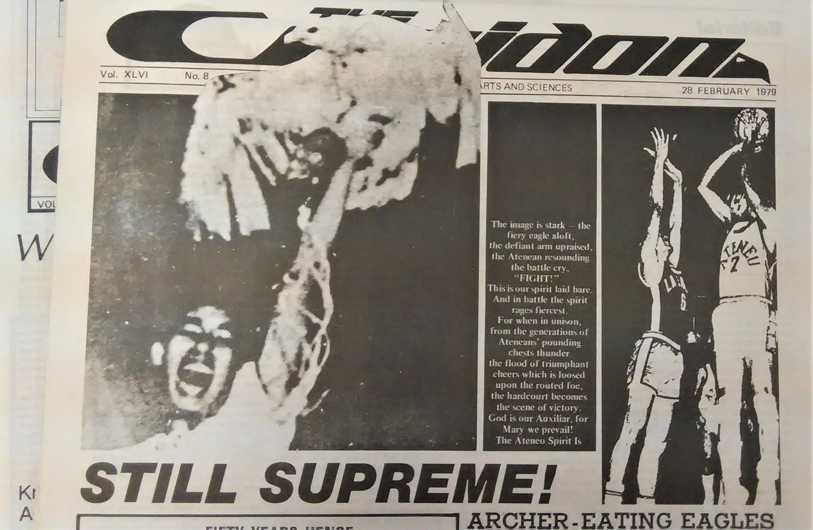
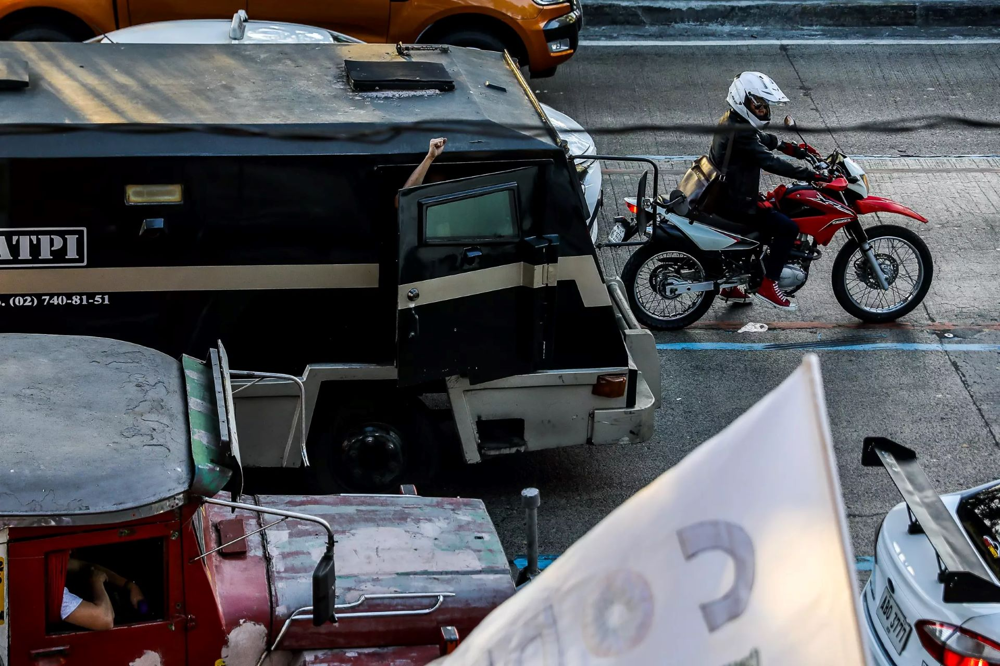
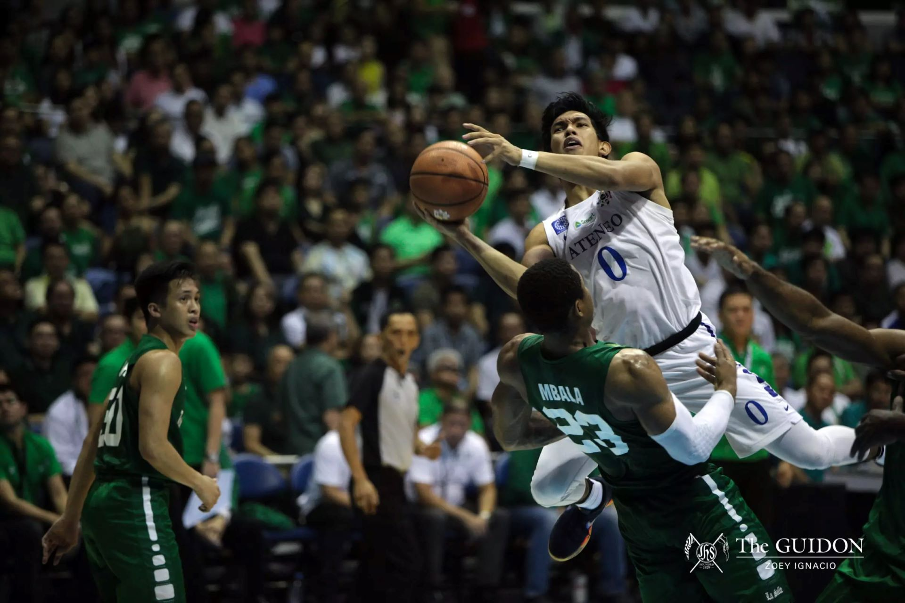
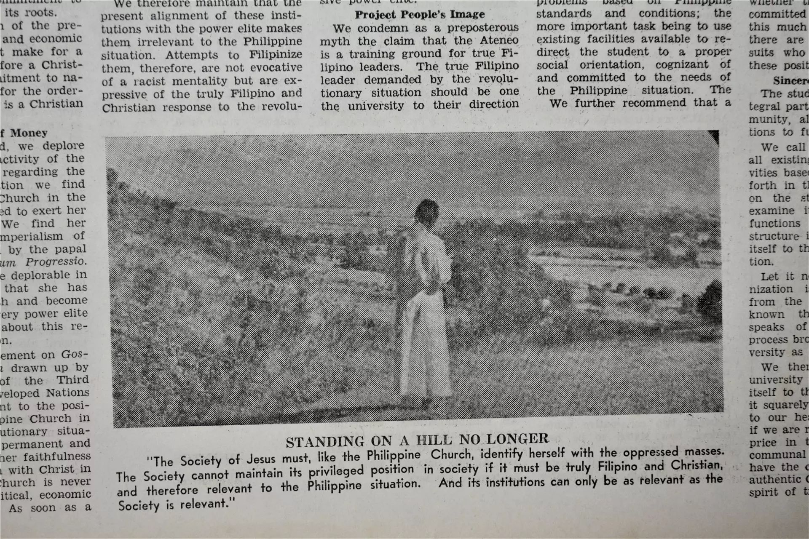
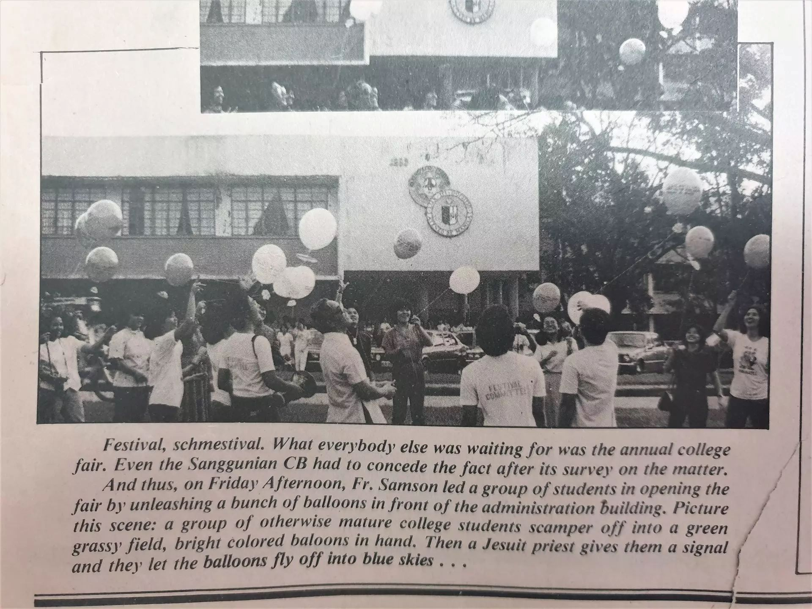
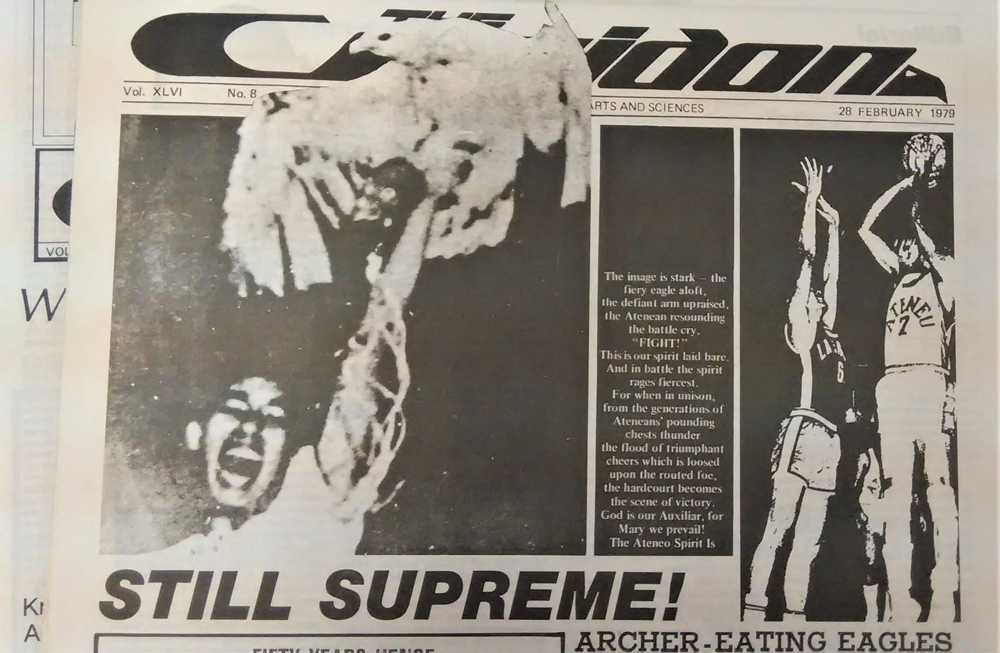
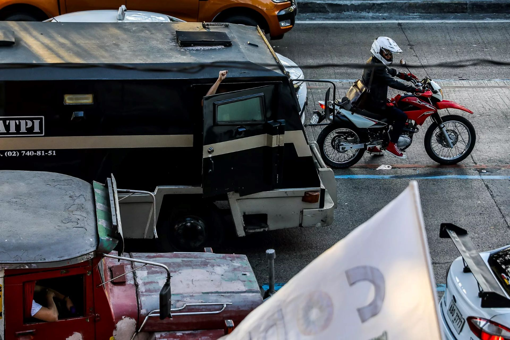
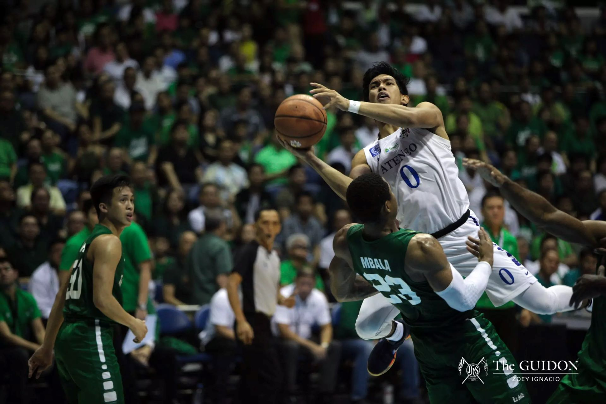

This year, The GUIDON deepens its commitment to verity and justice by Standing with the Truth.
To Stand with the Truth is also to stand with the people whose realities are marked by oppression and injustice.
Writing Cluster
News
At the forefront of The GUIDON, News is committed to chronicling all relevant events and developments within the Loyola Schools to consistently keep the Ateneo community up to date. Writing for News entails immediate documentation of—and response to—the Ateneo’s most pressing issues through print and online stories. Serving all sectors of the Ateneo, News staffers are tasked with reporting and unraveling the truth behind campus issues and events. With this, they are expected to think critically and creatively to produce newsworthy stories without sacrificing quality, credibility, and ethics.
Sports
The concept of sports transcends numbers and recreation. It is a haven for unscripted storylines, unlocked personalities, and an increased platform for everyone involved in the industry. In its pursuit of the truth, the mission of The GUIDON Sports is to bring all of these mentioned elements into the screens and broadsheets, providing its audience with well-molded stories that are both entertaining and relevant to the Ateneo and Philippine contexts.
Inquiry
Dedicated to unmasking covert realities, Inquiry is committed to delivering data-driven and humanized narratives that delve into the prevalent and deep-rooted phenomena within the Ateneo and Katipunan. As The GUIDON’s investigative arm, the staff seeks to explain relatively unknown issues and bring them closer to the Atenean sensibility. With the goal of looking deeper into the truth, Inquiry staffers must be dauntless in writing critical stories that matter to the Ateneo community. They aspire to be effective writers determined to probe relevant issues through in-depth analysis and empathetic storytelling.
Beyond Loyola
Through its timely reportage of diverse and underserved realities outside the University, Beyond Loyola situates the Filipino in their local and global contexts through careful analysis of the cultural, political, and economic forces shaping the state of our nation. As such, the staff seeks to maintain constant social awareness and spark relevant discourse in matters relevant to the Filipino and, in particular, the Atenean, as they become individuals for and with others.
Features
Dedicated to human-centric storytelling, Features delves into phenomena rooted in the underlying nexus of the private and public. The staff probes into personal accounts in its commitment to document existing sociocultural realities and contexts in a manner that is relevant in both concept and effect. As the staff aims to humanize society’s cultural trends, our writers endeavor to creatively present facts through impactful stories grounded in experience. In their pursuit of truth, staffers strive to highlight underrepresented voices and sidelined narratives.
Vantage Magazine
We are The GUIDON’s online magazine: a publication dedicated to campus culture and the people who make it. Vantage Magazine highlights the latest trends in food, film, music, and the arts through relevant and engaging content. Tapping into the endless potential of digital media, we take journalism into the 21st century—away from pretense and towards accessibility. Our vision is to become the leading and go-to source of compelling stories, engaging discussions, and creative expressions on Atenean campus culture and beyond. With a firm grasp of multimedia storytelling and all things Ateneo, Vantage Magazine celebrates creative expression balanced with responsible storytelling.
Broadcast News
Through the use of the audio-visual medium, Broadcast News aims to amplify voices and capture human-centric stories highlighting relevant social issues. The staff’s content includes voiceover reports, podcasts, live coverages, and short-form interviews. As the face and voice of The GUIDON’s on-screen appearances, the staff’s nature is highly collaborative with the other staffs within the publication. Our reporters are trained to be conversational storytellers with multimedia literacy through writing scripts, crafting media outputs, interviewing key figures in society, and reporting on breaking news within and beyond the Ateneo.
Organizational Cluster
Social Media
The Social Media staff is in charge of all of The GUIDON’s online platforms. We oversee the publication of digital content to ensure that everything is of utmost quality before its release. As the truth grows hazier amid a turbulent digital landscape, our commitment to the accurate dissemination of news remains more steadfast than ever. We actively search for patterns online that can help amplify The GUIDON's digital presence. Moreover, we use data-driven insights to not only assist The GUIDON’s writers and designers in improving their content, but also to keep the Ateneo community and beyond updated on stories that matter to them.
Human Resources
Serving as the internal affairs arm of The GUIDON, the Human Resources staff empowers its staffers to promote member welfare and development in the publication by spearheading internal initiatives such as training, feedback management, member integration, and events management. Human Resources provides avenues for growth and development in the publication, empowering the many writers, designers, and managers in their journalistic craft. Thus, the Human Resources staff actively cultivates an inclusive and conducive working environment through initiatives fostering deeper levels of camaraderie, contributing to the internal health of the organization and the well-being of its members.
Externals
The Externals Staff brings forward the publication’s advocacies to different sectors and communities within and outside the University. We work alongside the rest of the publication in furthering The GUIDON’s advocacy to Stand with the Truth through the ideation and execution of projects, the establishment of sustainable external relations, and the efficient circulation and archival of the publication’s print issues. Externals staffers are highly motivated and detail-oriented team players. They are expected to think creatively and be quick on their feet when ideating projects and engaging with stakeholders. Through the collaborative nature of the work in Externals, staffers will have the opportunity to further hone their skills in project management, communication, stakeholder relations, and critical thinking.
Research and Development
The Research and Development Staff is The GUIDON’s analytical arm, focused on improving the publication’s efficiency and releasing its own content that aligns with the organization’s commitment to Stand with the Truth. To attain its purpose, the staff is divided into two tracks, namely the Research Analyst Track and the Content Development Track. Research Analysts utilize the power of data to provide solutions to the publication’s internal processes and adapt to the growing demands of journalism. Meanwhile, Research Writers directly contribute to the publication by providing qualitative and quantitative data to reinforce the Writing Cluster, as well as releasing their own articles concerning relevant matters in the fields of Research and Development as well as Science and Technology.
Design Cluster
Graphic Design
The Graphic Design staff aims to capture present-day stories within and outside the confines of Ateneo through illustrations, layout design, and other visual content. In collaboration with the rest of the publication, the staff is in charge of creating dynamic press broadsheets and diverse multimedia graphics. As visual storytellers, it is the duty of the Graphic Design staff to connect with The GUIDON’s readers beyond words, whether on print or online. Through the joint work of illustrators, layout artists, and animators, the Graphic Design staff is able to fulfill its duty of strengthening visual journalism. Exuding contemporary realities through illustrative communication, the staff creates authentic narratives through the multimedia graphics they produce.
Photos
The Photos staff is The GUIDON’s premier photojournalistic arm, manned by visual storytellers who aspire to shed light on today’s vast societal realities. Its staffers take photographs that capture the human experience, bringing the truth to life. Alongside the rest of the cluster, the staff plays an integral role in visually engaging the audience through purposeful and skillful photos. The vision of the Photos staff is to be at the forefront of student journalism by amplifying the stories of communities within and beyond the Ateneo. The staff achieves this by being human-centric photojournalists who use creative and impactful visual storytelling to chronicle the events relevant to the community.
Video Production
The Video Production staff is at the forefront of the publication's shift to multimedia journalism. They are responsible for creating storyboards and producing videos that captivate viewers with impactful storytelling and cinematic videography. Through their work, they bring the narratives that matter to the audience, taking them on a visual journey across a wide range of stories—from deep investigations to the latest style trends. The Video Production staff produces projects through their Content Strategists and Technical Producers, who collaborate with each other to craft authentic narratives that amplify the voices of communities. They also work alongside other staffs’ writers, photographers, and designers to ensure a seamless integration of visuals and content, delivering a compelling storytelling experience. By combining their expertise in videography techniques and attention to detail, the staff releases videos that engage viewers and offer a platform for diverse perspectives across the publication's three platforms: The GUIDON, Vantage Magazine, and GUIDON Sports.
Digital Development
The Digital Development staff provides an avenue to innovate Philippine campus journalism through the production of strong, visionary, and meaningful interactive articles. In collaboration with the publication’s writers, photographers, videographers, and designers, the Digital Development staff creates an immersive experience for readers through the innovative use of various multimedia forms. In doing so, the staff acts as a training ground for budding digital designers and developers who are committed to bringing journalism into the 21st century. The Digital Development staff also maintains The GUIDON’s websites and improves their relevance and usability as online platforms. Grounded in user experience, the staff’s work paves the way for the cutting-edge modernization of The GUIDON, efficiently helping readers sift through the noise of a polluted online environment and arrive at the stories that matter to them.